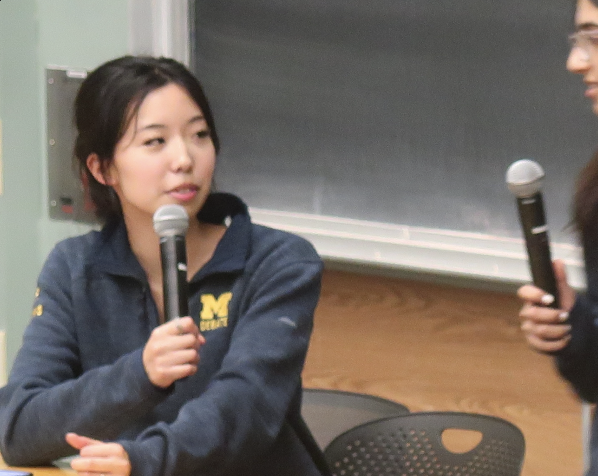

WGM
The
Blog
Co-President Blogs
Advice Column
These are Aanya, Aalya, and Sofia's field notes on navigating sexism in debate and finding a place for yourself.


Your Blogs
Your Stories.
Blog posts from others. Send us yours on insta @wgm.cx.

Draft 01 / [Co-president 01]
Community care is not a consolation prize.
On the difference between being welcomed into a room and being expected to make it comfortable for everyone else.
Read the draft↗
Draft 02 / [Co-president 02]
Staying in the room without shrinking.
A reflection on credibility, interruption, and the small choices that let us keep our full voice.
Read the draft↗
Draft 03 / [Co-president 03]
Making space is a practice, not a mood.
What changes when inclusion becomes something we build into pairings, feedback, leadership, and every ordinary day.
Read the draft↗Share your story.
Follow @wgm.cx for more reflections, updates, and invitations into the conversation.